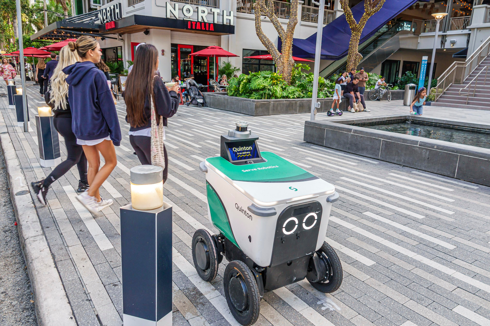

Serve Robotics, компания, выросшая в 2021 году из курьерского сервиса Postmates, объявила о запуске AV Delivery Developer Portal. Портал даёт сторонним разработчикам, небольшим бизнесам и ИИ-агентам прямой доступ к парку из примерно 2 000 тротуарных роботов, которые уже возят заказы в Лос-Анджелесе, Майами, Далласе и десятках других городов США — всего около 150 районов обслуживания. Робот на вид — автономная тележка, скорость около 6 миль в час (порядка 10 км/ч), так что опасности для пешеходов почти нет.
Глава компании Али Кашани в интервью The Verge объяснил экономику шага: фуд-доставка живёт двумя пиками — обедом и ужином, а между ними роботы простаивают. Открытый маркетплейс загрузки позволяет дозагружать парк в «мёртвые» окна и меньше зависеть от крупных агрегаторов вроде Uber Eats, которые берут свою комиссию с каждого заказа. Приоритетов никаких: «пока робот не выехал на заказ, он никому не обещан», — подчёркивает Кашани. Запросы по API для компании равноценны корпоративным заказам.
Самая любопытная деталь анонса: в списке тех, кому адресован портал, прямо указаны автономные ИИ-агенты. То есть вызов робота-курьера встраивается в агентские сценарии на уровне обычного HTTP-запроса — маленький бизнес сможет поручить ИИ-ассистенту оформить доставку, не открывая приложение. Главная бизнес-логика — комиссии: агрегаторы вроде DoorDash и Uber Eats берут с заказа от 15% до 30%, в основном из-за оплаты живых курьеров (данные The Verge). Подключив роботов напрямую к своему сайту или кассе, пекарня, цветочный или аптека возят себя сами и не платят посреднику.
Для рынка тротуарной доставки это разворот от закрытых партнёрств к модели «роботы как инфраструктура»: вместо эксклюзивных контрактов с агрегаторами — публичный API по требованию. Если эксперимент приживётся, следующим шагом станут агентские сети, где заказ еды, пересылка документов и доставка лекарств выбираются исполнителем-роботом автоматически, по цене и доступности.